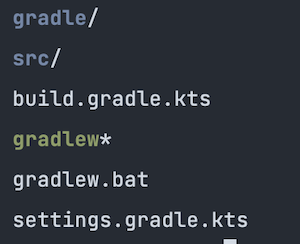

Kotlin CLI
Automating things via command line tools is awesome and after doing some experimenting with Kotlin as a modern programming language for cli applications and inspired by the kotlin cli starter repo I wanted to break down creating the cli application from scratch using CLIKT and Coroutines.
Create a single module Gradle project
Create a project folder and skaffold it a Gradle application project:
1 | # create your poject directory |
Choose the following project settings when prompted:
1 | # select 2 application project |
Now we have an empty application project. Let’s clean it up a bit. The application structure created a single module project, we can remove the module and use the root projct as the module source:
1 | # move the build script to root project |
Open settings.gradle.kts and remove the module reference include("app"). Your app directory structure should look simiilar to the following:

Dependencies
A common way to manage gradle dependencies is to have an ext{} block in your root project. This doesn’t provide any code completion or code navigation, in order to suppport those features we will define dependencies as String constants in Dependencies.kt inside of buildSrc folder. The directory buildSrc is treated as an included build where Gradle automatically compiles its sources.
1 | # make a buildSrc directory and source package structure |
Now we need to create a build script for our Dependencies
1 | $ touch buildSrc/build.gradle.kts |
Open the new build.gradle.kts file and add the following:
1 | plugins { |
Asynchronous Command Line Iterface for Kotlin
We will use CLIKT multiplatform library which makes writing cli apps easy and Coroutines for an asynchronous, or non-blocking, application. Open buildSrc/src/main/kotlin/Dependencies.kt file to add the following dependencies and versions:
1 | object Versions { |
Now we can access these in our applications build script. Open the root build.gradle.kts file to add the dependencies and do some version updates:
1 | // add to the dependencies block |
Optionally, we can update our kotlin version
1 | // update plugins block |
Once you start using buildSrc for dependencies you can update many more build script definitions.
Demo CLI App
Now that our project structure is complete we can start build our cli application. We will reate a cli package for our source code and create the following classes/objects:
- Main.kt: Our application entry
- Demo.kt: Our suspendable computation
- DemoConfig.kt: Our applications configurations
- DemoCommand.kt: Our applications teminal commands
1 | # create package directory |
The DemoConfig.kt is a utility to house some globals, for now we will use to to reference our app command name. Open DemoConfig.kt to and add the following:
1 | package cli |
The DemoCommand.kt is a subclass of CliktCommand. We will set it up with our help page and support for verbose output.
1 | class DemoCommand: CliktCommand( |
The Demo.kt will have our asynchronous methods to do work, to start we look help in the args passed to the application.
1 | package cli |
The Main.kt will be our application entry point. We will run the app in a new coroutine that blocks the current thread until its completion. runBlocking is designed to bridge blocking code to suspending runDemo function.
1 | package cli |
With our source code ready we need to define our applications entry point. We can do this by defining our application entry class. Following our buildSrc pattern we can create a new class to source our application configuration:
1 | # create Coordinates.kt in buildSrc |
Open the newly created Coordinates.kt file and add some application configruateions:
1 | object AppCoordinates { |
Now we can reference the APP_ID as the main class for our application in the root build.gradle.kts build script, open it and add the following:
1 | application { |
Run the app
At this point the application can be assembled and distributed.
1 | # build the app |
This will generate an executable in build/install/demo/bin/demo. We can create a run script at the root of the project to expedite and run the application from project root.
1 | # create a run script |
Open demo and add the following:
1 |
|
Now we can run ./demo --help to see our help page defined in DemoCommand.kt
1 | Usage: demo [OPTIONS] |
And with that we have successfully skaffold a Kotlin cli application using Clikt and Coroutines, happy coding!